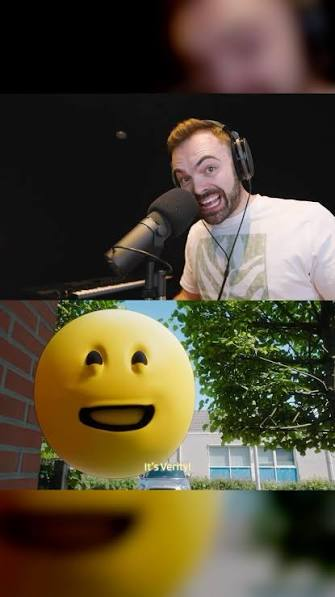

Horror Skunx
He made the song "Hey its me its verity"
The first ever song he had created was called "Runaway" which was on march 1st 2021
His newest song is "The Aura Farmer"

Home
Michael Jackson
Drake